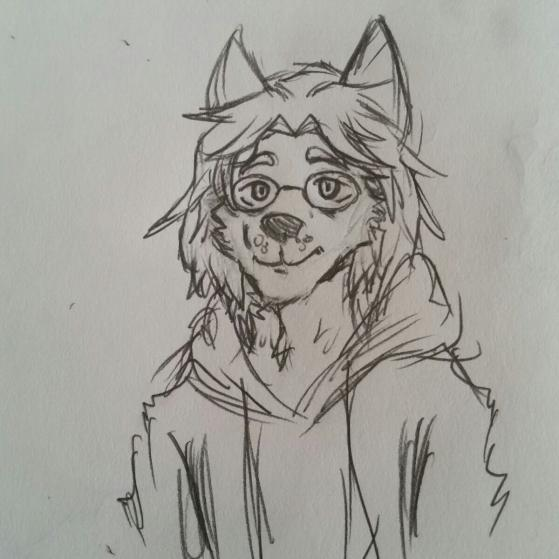

Khoa Dien
Hey there! Just a few words about me, a co-creator of this website.
I love everything about computers, specifically software. My good days would involve coding, reading tech, watching tech, and talking tech. So for me, the term "IT geek" is a compliment.
I'm also an open-source advocate and a big Linux fan as well. I love the CLI more than the GUI, the keyboard more than the mouse, because you gotta agree with me that typing out commands to make things work is way more satisfying than pointing and clicking! All that being said though, I'm always open to trying and using all platforms and OS's because I believe everyone has something special to offer.
So that's pretty much it about me. You can find me online on LinkedIn and GitHub to have a chat about tech (pretty much a given if you've read this far!).

Nathan Brennan
My name is Nathan Brennan. Not much goes on in my average day to day life. I wake up, I shower, I go to school, I go home, and then I go to my computer and then bed. Most people would say that is pretty bland. And I'll admit, some days, it is quite boring. Quite bland. To be truly honest, I just don't have the social skills to go out and talk to people. Don't have the motivation to even try. So, I instead get all my social interactions online, through various friends and games. Oh, And Fridays I have DnD, so there is SOME progress in the social department.
Winter Animosus
Now, I mentioned I do things online. So, let me start again. My name is Winter Animosus (Or Penny Harmless, depending on my mood) The moment I get home, is when my online interactions begin. Now, I only have limited space, so I suppose I should probably keep this short. So here is a few facts about me: First off, I'm a furry. You know what it is, good for you. You hate it? That's your opinion, don't cry to me about it. You don't know? I don't have room to explain it, just go here. This explains it fairly well I suppose. I'm also pansexual, and have a boyfriend. Also, I am running out of space... So... You want more, message me on discord.